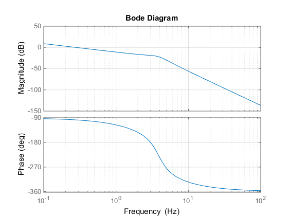
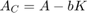
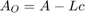
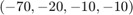
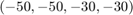
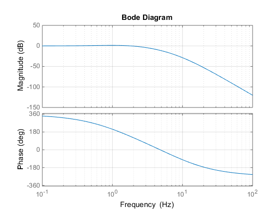

Relatório preliminar do laboratório de CEE
Este trabalho foi realizado pelo grupo 4 de 4ª feira composto por:
- Alexandre Aparício Nº73252
- Pedro Ribeiro Nº73221
- Samuel Balula Nº72735
Contents
- Definição das matrizes do modelo de estado
- Caracterização da controlabilidade e observabilidade do sistema
- Diagrama de Bode do sistema
- Manipulação de pólos do sistema por realimentação e estimação das variáveis de estado
- Verificação do cálculo dos vectores de ganho
- Função de transferência em cadeia fechada
Começa-se por limpar todas as variáveis que possam estar definidas antes de executar o código
clear;
Definição das matrizes do modelo de estado
Começa-se por se definir as matrizes que se definem o modelo de estado, que são fornecidas no enunciado:
A=[0,0,1,0;0,0,0,1;0,566,-37,0;0,-922,37,0]; b=[0;0;65;-65]; c=[1,1,0,0];
Caracterização da controlabilidade e observabilidade do sistema
Antes de se calcular os vectores de ganho do controlador e do observador, é necessário determinar se o sistema é ou não controlável e observável. Criaram-se então duas macros:
- controlab: Recebe a matriz A e o vector b e retorna a respectiva matriz de controlabilidade e uma variável que é igual a 1 se o sistema for controlável e 0 se não for.
- observab: Recebe a matriz A e o vector c e retorna a respectiva matriz de observabilidade e uma variável que é igual a 1 se o sistema for observável e 0 se não for.
Verifica-se que este sistema é controlável e observável.
[C,cntr]=controlab(A,b); C cntr [O,obsr]=observab(A,c); O obsr
C =
0 65 -2405 52195
0 -65 2405 -29055
65 -2405 52195 -569985
-65 2405 -29055 -286195
cntr =
1
O =
1 1 0 0
0 0 1 1
0 -356 0 0
0 0 0 -356
obsr =
1
Diagrama de Bode do sistema
Criou-se uma macro para realizar o diagrama de bode do sistema a partir das sua matrizes A, b e c (e assumindo que d=0). Observa-se que o sistema em malha aberta possui pelo um pólo na origem e os restantes 3 pólos perto da frequência de 4Hz, visto que a magnitude decai a -20db por década até essa frequência, passando a decair de seguida com -80db por década.
plot_tf(A,b,c,0.1,100);
Manipulação de pólos do sistema por realimentação e estimação das variáveis de estado
Começa-se por se definir os valores próprios pretendidos para o controlador (vpp_C) e para o erro do observador (vpp_O):
vpp_C=[-70,-20,-10,-10]; vpp_O=[-50,-50,-30,-30];
De seguida, executa-se a função ganhos, que recebe a matriz de controlabilidade e observabilidade do sistema, juntamente com os valores próprios pretendidos para o controlador e para os erros do observador e que retorna os vectores de ganho do controlador (L) e do erro do observador (K)
[K,L]=ganhos(C,vpp_C,O,vpp_O,A); K L
K =
6.0501 -30.5345 1.0297 -0.0933
L =
1.0e+03 *
0.0335
0.0895
-1.1612
5.0882
Verificação do cálculo dos vectores de ganho
É possível confirmar se os vectores de ganho do controlador e do observador estão correctos, calculando os pólos da nova matriz A para o sistema realimentado  e para o observador assimptótico aplicado . Relembrando que os pólos desejados para o controlador eram:

E para os erros do observador

É possível confirmar se os pólos estão bem cálculados calculando os pólos das novas matrizes A para o sistma realimentado e para o observador assimptótico:
eig(A-b*K) eig(A-L*c)
ans = -70.0000 -20.0000 -10.0000 -10.0000 ans = -50.0000 -50.0000 -30.0000 -30.0000
Visto que os pólos obtidos computacionalmente são iguais aos desejados e como pelo teorema da separação, os pólos de um sistema de controlo linear por realimentação podem ser projectados independentemente para o sistema realimentado e para o observador assimptótico sendo este válido para um sistema realimentado pelas variáveis de estado estimadas, confirma-se que os vectores de ganho obtidos tanto para o controlador como para erro do observador estão correctos.
Função de transferência em cadeia fechada
Por fim determinou-se o diagrama de Bode do sistema em cadeia fechada. A união entre o modelo em cadeia aberta e o estimador que irão formar o sistema em cadeia fechada é realizada pela função ligacao, que recebe as matrizes do sistema em malha aberta e do estimador em malha aberta e retorna uma variável em formato sys que descreve o sistema (representado em espaço de de estados) como representado no esquema de simulink.
sys_ss=ligacao(A,b,c,A-b*K-L*c,-L,-K);
Assim é possível determinar a função de transferência através da função tf:
sys_tf=tf(sys_ss)
sys_tf =
-9.724e07 s^3 - 4.853e09 s^2 - 4.559e10 s + 3.15e11
------------------------------------------------------------------------
s^8 + 270 s^7 + 3.03e04 s^6 + 1.839e06 s^5 + 6.573e07 s^4 + 1.41e09 s^3
+ 1.762e10 s^2 + 1.168e11 s + 3.15e11
Continuous-time transfer function.
E obter o respectivo diagrama de bode
h=bodeplot(sys_ss,{2*pi*0.1,2*pi*100});
setoptions(h,'FreqUnits','Hz','grid','on');
